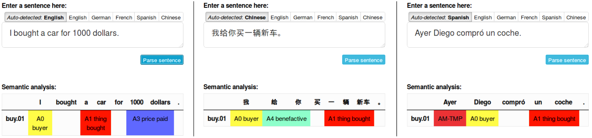

Multilingual Text Analytics
A principal focus of my research is to develop text analytics capabilities for multilingual text. A crucial challenge here is how to effectively create Information Extraction (IE) methods that can discover and extract specific structured information from large-scale unstructured data in multiple languages.
Multilingual Information Extraction
Our core research is in determining a semantic feature space that is shared between all languages. Such a feature space may be explicit and human-readable, as is the case of the Universal Proposition Banks, or induced such as a high dimensional embedding space. Given such a shared feature space, we can develop an extractor only once, but immediately run it on multilingual text without any language-specific adaptation. The Figure on the left shows such an extractor in our PolyglotIE system.
Check out screencasts of the system:
The corrsponding publication is found here:
Multilingual Information Extraction with PolyglotIE. Alan Akbik, Laura Chiticariu, Marina Danilevsky, Yonas Kbrom, Yunyao Li and Huaiyu Zhu. 26th International Conference on Computational Linguistics, COLING 2016. [pdf][video]
Crosslingual Semantic Parsing
An Information Extraction system such as PolyglotIE cannot work without a crosslingual parser that parses text in different languages into a shared, language-independent abstraction. Much of our research has focused both on developing a high quality parsing system, as well as training it for different languages. This work has resulted in the state-of-the-art K-SRL parsing approach and the Polyglot semantic role labeler.

Polyglot is currently capable of semantically parsing 9 different languages. Check out the three screenshots above for example sentences in English, Mandarin Chinese and Spanish. The same semantic concepts are recognized across languages, allowing us to build extractors on top of parser output. The corresponging publications are as follows:
K-SRL: Instance-based Learning for Semantic Role Labeling. Alan Akbik and Yunyao Li. 26th International Conference on Computational Linguistics, COLING 2016. [pdf]
Polyglot: Multilingual Semantic Role Labeling with Unified Labels. Alan Akbik and Yunyao Li. 54th Annual Meeting of the Association for Computational Linguistics, ACL 2016. [pdf]
Alan Akbik
Text and Data Mining
IBM Research
akbika [ät] us [dot] ibm [dot] com